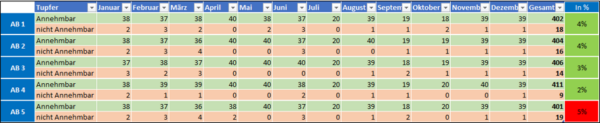
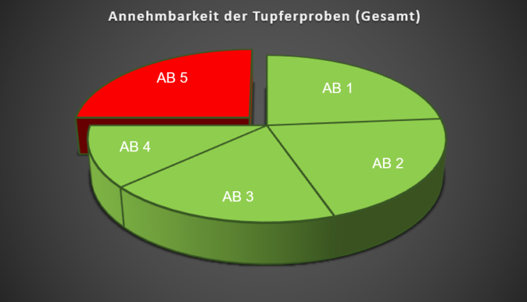

Die Hygieneprobenstatistik zeigt, ob der festgelegte Reinigungsplan eingehalten wurde. Wir können damit feststellen, in welchen Bereichen die Reinigungsmethoden korrekt sind, an welchen Stellen der Reinigungsplan nachträglich angepasst werden muss oder welche Bereiche mehr Aufmerksamkeit benötigen. Für eine detaillierte Auswertung der erhobenen Daten legen wir Richtlinien fest, die eingehalten werden müssen. Dies beinhaltet auch die Berücksichtigung möglicher Abweichungen oder die Bestimmung, wie hoch diese sein können. Wir arbeiten mit einem Ampelsystem, um unseren Kunden die Bewertung übersichtlich präsentieren zu können. Vorgabe: War die Reinigung erfolgreich? Für die Hygieneproben ist eine maximale Abweichung von -4% vorgesehen. Mindestens 96% der Proben müssen annehmbar sein. Wir dokumentieren jeden Monat alle genommenen Hygieneproben und verwenden das Ampelsystem in Kombination mit der Spezifikation, um zu sehen, wie viele Proben annehmbar waren oder nicht. Wenn die Spezifikation zu stark überschritten oder unterschritten wird und die Abweichung vom Plan somit zu stark ist, wird sie rot hervorgehoben.

Die gesammelten Daten werden in Statistiken erfasst und dann ausgewertet.

Um Fehler bei der Auswertung zu vermeiden, werden jeden Monat außerplanmäßige Abweichungen oder Änderungen, die aufgetreten sind, dokumentiert. Auf diese Weise können wir ausschließen, dass es sich um einen Fehler im Reinigungsplan handelt. In Verbindung damit können wir die Ursache des Problems lokalisieren und eine Lösung für Sie erarbeiten.